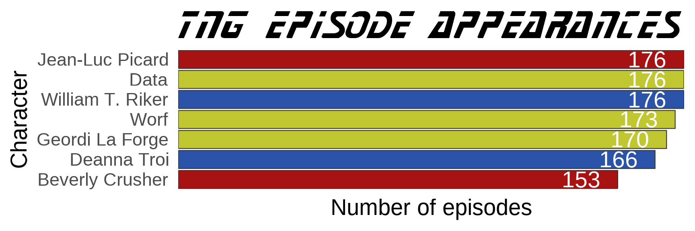

The rtrek package includes some Star Trek datasets, but much more data is available outside the package. You can access other Star Trek data through various APIs.
Technically, there is only one formal API: the Star Trek API (STAPI). rtrek has functions to assist with making calls to this API in order to access specific data. This is the focus of this vignette.
rtrek also interfaces with and extracts information from the Memory Alpha and Memory Beta websites. Neither of these sites actually expose an API, but functions in rtrek with querying these websites in an API-like manner. See the respective vignettes for details.
Accessing information from STAPI is covered to some degree in the package introduction vignette. There is some duplication here, followed by additional examples.
The Star Trek API (STAPI) is a particularly useful data source.
Keep in mind that STAPI focuses more on providing real world data associated with Star Trek (e.g., when did episode X first air on television?) than on fictional universe data, but it contains both and the database holdings will grow with time.
To use the words of the developers, the STAPI is
the first public Star Trek API, accessible via REST and SOAP. It’s an open source project, that anyone can contribute to.
The API is highly functional. Please do not abuse the API with constant requests. Their pages suggest no more than one request per second, but I would suggest ten seconds between successive requests. The default anti-DDOS measures in rtrek limit requests to one per second. You can update this global rtrek setting with options, e.g. options(rtrek_antiddos = 10) for a minimum ten second wait between API calls to be an even better neighbor. rtrek will not permit faster requests. If set below one second, the option is ignored and a warning thrown when making any API call.
There a many fields, or entities, available in the API. The available IDs can be found in this table:
stapiEntities
#> # A tibble: 40 x 4
#> id class ncol colnames
#> <chr> <chr> <int> <list>
#> 1 animal tbl_df 7 <chr [7]>
#> 2 astronomicalObject tbl_df 5 <chr [5]>
#> 3 book tbl_df 24 <chr [24]>
#> 4 bookCollection tbl_df 10 <chr [10]>
#> 5 bookSeries tbl_df 11 <chr [11]>
#> 6 character tbl_df 24 <chr [24]>
#> 7 comicCollection tbl_df 14 <chr [14]>
#> 8 comics tbl_df 15 <chr [15]>
#> 9 comicSeries tbl_df 15 <chr [15]>
#> 10 comicStrip tbl_df 12 <chr [12]>
#> # ... with 30 more rowsThese ID values are passed to stapi to perform a search using the API. The other columns provide some information about the object returned from a search. All entity searches return tibble data frames. You can inspect or unnest the column names of each table returned from every available entity search so you can see beforehand what variables are associated with each entity.
Using stapi should be thought of as a three part process:
stapi one more time referencing the specific observation.To determine how many pages of results exist for a given search, set page_count = TRUE. The impact on the API will be equivalent to only searching a single page of results. One page contains metadata including the total number of pages. Nothing is returned in this “safe mode”, but the total number of search results available is printed to the console.
Searching movies only returns one page of results. However, there are a lot of characters in the Star Trek universe. Check the total pages available for character search.
stapi("character", page_count = TRUE)
#> Total pages to retrieve all results: 64And that is with 100 results per page!
The default page = 1 only returns the first page. page can be a vector, e.g. page = 1:62. Results from multi-page searches are automatically combined into a single, constant data frame output. For the second call to stapi, return only page two here, which contains the character, Q (currently, pending future character database updates that may shift the indexing). In case that does change and Q is not always near the top of page two of the search results, the example further below hard-codes his unique/universal ID.
stapi("character", page = 2)
#> # A tibble: 100 x 24
#> uid name gender yearOfBirth monthOfBirth dayOfBirth placeOfBirth
#> <chr> <chr> <chr> <int> <lgl> <lgl> <chr>
#> 1 CHMA~ Stev~ <NA> NA NA NA <NA>
#> 2 CHMA~ Yegg~ M NA NA NA <NA>
#> 3 CHMA~ Arex M NA NA NA <NA>
#> 4 CHMA~ Jose~ M NA NA NA <NA>
#> 5 CHMA~ J. Z~ <NA> NA NA NA <NA>
#> 6 CHMA~ Doyle M NA NA NA <NA>
#> 7 CHMA~ Butl~ M NA NA NA <NA>
#> 8 CHMA~ Lito M NA NA NA <NA>
#> 9 CHMA~ B. M~ <NA> NA NA NA <NA>
#> 10 CHMA~ Anna~ <NA> NA NA NA <NA>
#> # ... with 90 more rows, and 17 more variables: yearOfDeath <int>,
#> # monthOfDeath <lgl>, dayOfDeath <lgl>, placeOfDeath <lgl>,
#> # height <int>, weight <int>, deceased <lgl>, bloodType <lgl>,
#> # maritalStatus <chr>, serialNumber <chr>, hologramActivationDate <lgl>,
#> # hologramStatus <lgl>, hologramDateStatus <lgl>, hologram <lgl>,
#> # fictionalCharacter <lgl>, mirror <lgl>, alternateReality <lgl>Character tables can be sparse. There are a lot of variables, many of which will contain missing data for rare, esoteric characters. Even for more popular characters about whom much more universe lore has been uncovered, it still takes dedicated nerds to enter all the data in a database.
When a dataset contains a uid column, this can be used subsequently to extract a satellite dataset about that particular observation that was returned in the original search. First you used safe mode, then search mode, and now switch from search mode to extraction mode to obtain data about Q, specifically. All that is required to do this is pass Q’s uid to stapi and call the function one last time. When uid is no longer NULL, stapi knows not to bother with a search and makes a different type of API call requesting information about the uniquely identified entry.
Q <- "CHMA0000025118"
Q <- stapi("character", uid = Q)
library(dplyr)
q_eps <- Q$episodes %>% select(uid, title, stardateFrom, stardateTo)
q_eps
#> uid title stardateFrom stardateTo
#> 1 EPMA0000001458 All Good Things... 47988.0 47988.0
#> 2 EPMA0000001329 Q Who 42761.3 42761.3
#> 3 EPMA0000001377 Qpid 44741.9 44741.9
#> 4 EPMA0000000483 Encounter at Farpoint 41153.7 41153.7
#> 5 EPMA0000000651 Tapestry NA NA
#> 6 EPMA0000000845 Q-Less 46531.2 46531.2
#> 7 EPMA0000162588 Death Wish NA NA
#> 8 EPMA0000001413 True Q 46192.3 46192.3
#> 9 EPMA0000001510 The Q and the Grey 50384.2 50392.7The data returned on Q is actually a large list, including multiple data frames. For simplicity only a piece of it is shown above.
Find out which TNG characters other than Q appear in both the Encounter at Farpoint series premier and later in the All Good Things… series finale. To do this, usestapi to extract data from other endpoints by following a breadcrumb trail of uid values.
Engage.
eps <- c("Encounter at Farpoint", "All Good Things...")
q_eps <- filter(q_eps, title %in% eps)
q_eps
#> uid title stardateFrom stardateTo
#> 1 EPMA0000001458 All Good Things... 47988.0 47988.0
#> 2 EPMA0000000483 Encounter at Farpoint 41153.7 41153.7
eaf <- stapi("episode", uid = q_eps$uid[q_eps$title == eps[1]])
agt <- stapi("episode", uid = q_eps$uid[q_eps$title == eps[2]])
characters <- setdiff(intersect(eaf$characters$name, agt$characters$name), "Q")
characters
#> [1] "Data" "Jean-Luc Picard" "Worf"
#> [4] "William T. Riker" "Deanna Troi" "Beverly Crusher"
#> [7] "Geordi La Forge"This returns the main crew members who remained a part of the show from beginning to end. However, Dr. Beverly Crusher was away during season two. Below, inspect how many episodes each character, or actor, appeared in. uid is again needed, this time for each character.
Note that this requires making seven API calls, one for each character ID. The anti-ddos measures in rtrek will force a one-second minimum wait between each call in the event that the individual calls actually return results faster than this, so the code below will take at least seven seconds to complete.
Add a fun, gratuitous Star Trek-themed plot. Make it so.
characters <- eaf$characters %>% select(uid, name) %>% filter(name %in% characters)
characters
#> uid name
#> 1 CHMA0000128858 Data
#> 2 CHMA0000132571 Jean-Luc Picard
#> 3 CHMA0000123141 Worf
#> 4 CHMA0000123073 William T. Riker
#> 5 CHMA0000123101 Deanna Troi
#> 6 CHMA0000123143 Beverly Crusher
#> 7 CHMA0000132570 Geordi La Forge
eps_count <- rowwise(characters) %>% do(stapi("character", uid = .$uid)$episodes$series %>%
summarize(n = sum(title == "Star Trek: The Next Generation")))
eps_count <- select(characters, name) %>% bind_cols(eps_count)
library(ggplot2)
library(showtext)
font_add("StarNext", system.file(paste0("fonts/StarNext.ttf"), package = "trekfont"))
showtext_auto()
uniforms <- c("#2b53a7", "#c1c730", "#a71313")[c(1, 1, 2, 2, 2, 3, 3)]
eb <- element_blank()
ggplot(eps_count, aes(factor(name, levels = name[order(n)]), n)) + geom_col(fill = uniforms,
color = "gray20") + coord_flip() + theme_minimal(base_size = 28) + theme(plot.title = element_text(family = "StarNext"),
line = eb, axis.text.x = eb) + scale_x_discrete(expand = c(0, 0)) + scale_y_continuous(expand = c(0,
0)) + labs(x = "Character", y = "Number of episodes", title = "TNG EPISODE APPEARANCES") +
geom_text(aes(label = n), color = "white", size = 10, hjust = 1.5)
This looks as expected. Inspect the structure of the list objects returned by stapi to become more familiar with what kind of information is available.
Sometimes you may receive errors when trying filter rows for one of the data frames while certain problematic columns are still selected. This is likely because the data frame contains a nested data frame, but one which is not nested in the typical way (e.g., tidyr::unnest will also fail to resolve the issue).
In the code immediately above, this occurs with the series data frame, which is why the episodes parent data frame is subset using $series before calling summarize.